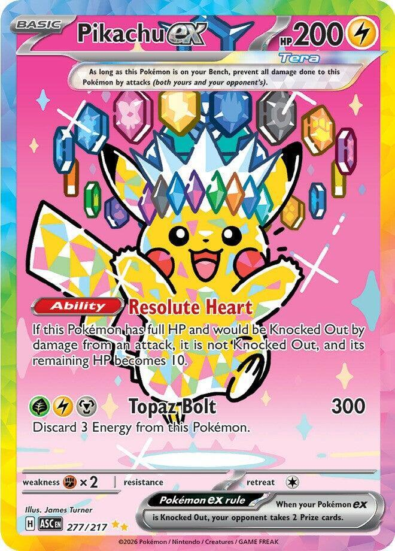
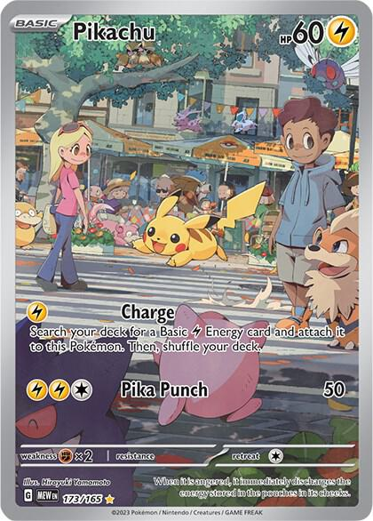
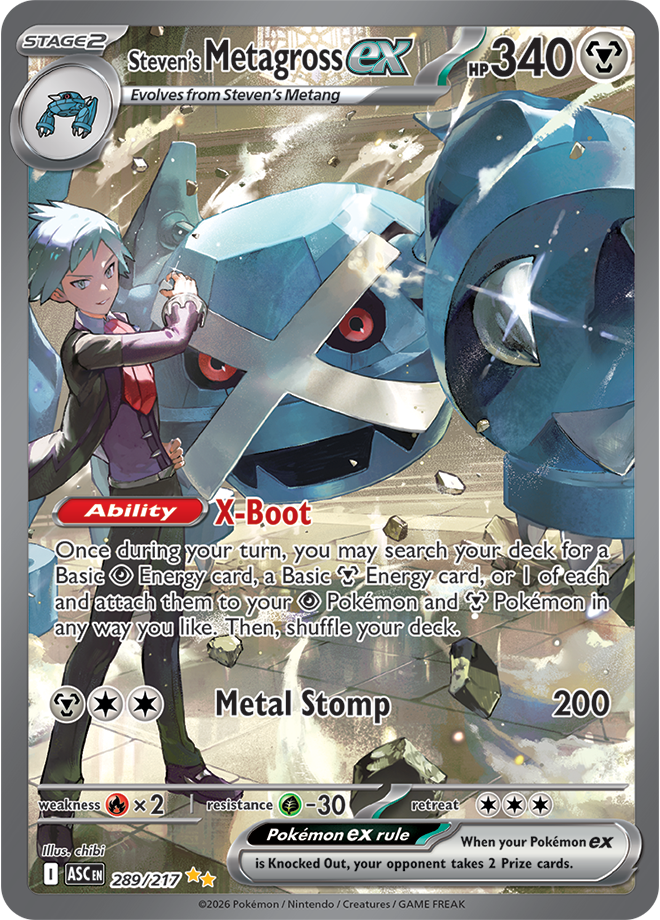
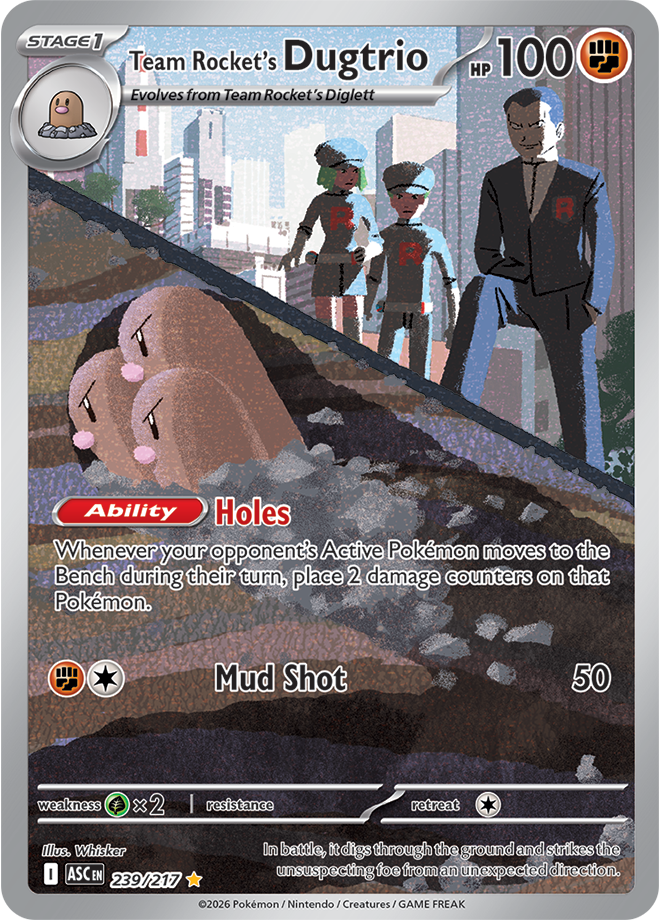
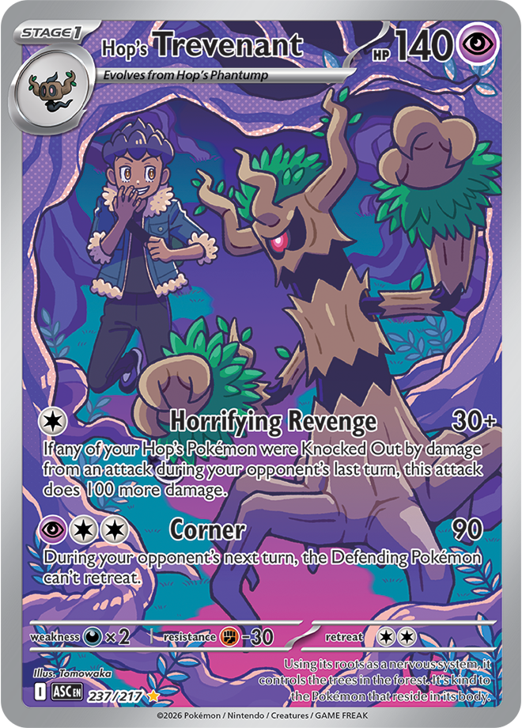
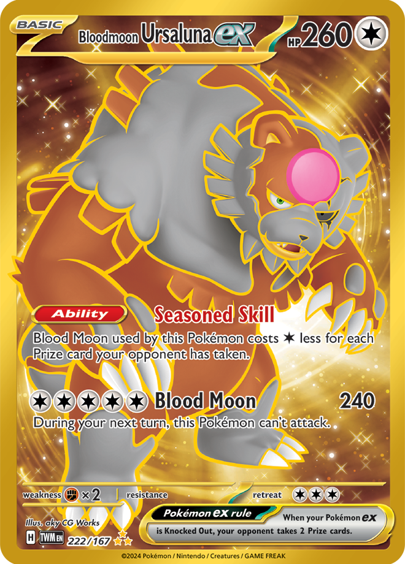

Pokémon was invented by a Japanese man named Satoshi Tajiri, helped by his friend Ken Sugimori, who is an illustrator.
Around 1981 Satoshi started a gaming magazine together with his friends called Game Freak, but after a while he decided
to start making his own video games, instead of writing about them. In 1989 Satoshi and Ken turned Game Freak into a gaming company,
and together with their friends they released a few games such as Pulseman, Yoshi and Mario & Wario, which did pretty well.
In the early 1990s, inspired by his childhood exploring forests and finding bugs and tadpoles, Satoshi came up with the
idea for Pocket Monsters (or as it's better known Pokémon), and pitched it to Nintendo.






